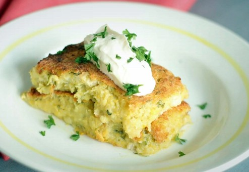

Kaimiškas kugelis
Reikės:
- 6–7 vidutinių bulvių;
- 2 svogūnų;
- maltų juodųjų pipirų;
- žiupsnio druskos;
- 1 kiaušinio;
- 200 ml pieno;
- 2 šaukštų majonezo;
- aliejaus formai patepti.
Gaminimas:
- Bulves ir svogūną sutarkuokite (jei susikaups labai daug vandens, nuspauskite). Pieną užvirinkite ir juo nuplikykite bulves. Įmuškite kiaušinį, įberkite druskos ir pipirų, įmaišykite du šaukštus majonezo.
- Kepimo formą patepkite aliejumi. Supilkite visą masę. Kepkite apie 40–50 minučių iki 180 laipsnių įkaitintoje orkaitėje. Aišku, jei kugelis plonas, užteks ir pusvalandžio.
- Jei nebijote papildomų kalorijų, kugelį valgykite su grietinės, sviesto, šoninės bei svogūnų padažu. Neįtikėtinai gardu ir sotu. Skanaus!

Julius Leonavičius